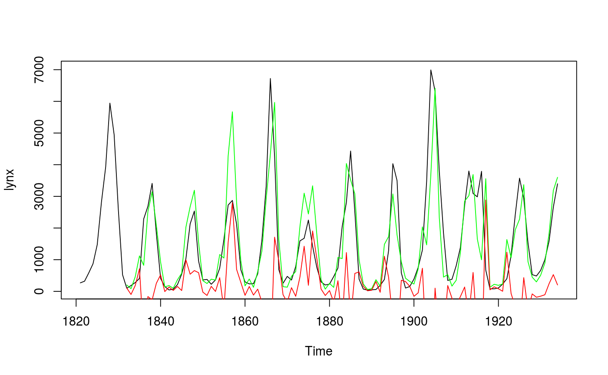
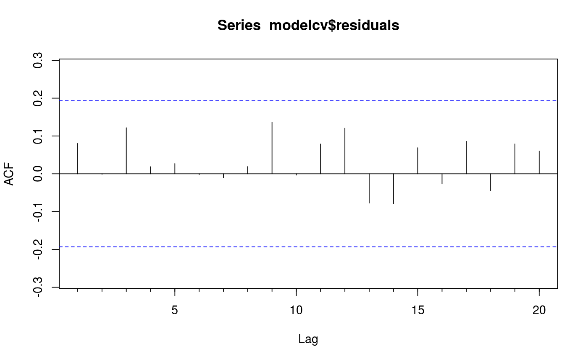

CVar computes the errors obtained by applying an autoregressive
modelling function to subsets of the time series y using k-fold
cross-validation as described in Bergmeir, Hyndman and Koo (2015). It also
applies a Ljung-Box test to the residuals. If this test is significant
(see returned pvalue), there is serial correlation in the residuals and the
model can be considered to be underfitting the data. In this case, the
cross-validated errors can underestimate the generalization error and should
not be used.
CVar(y, k = 10, FUN = nnetar, cvtrace = FALSE, blocked = FALSE, LBlags = 24, ...)
| y | Univariate time series |
|---|---|
| k | Number of folds to use for cross-validation. |
| FUN | Function to fit an autoregressive model. Currently, it only works
with the |
| cvtrace | Provide progress information. |
| blocked | choose folds randomly or as blocks? |
| LBlags | lags for the Ljung-Box test, defaults to 24, for yearly series can be set to 20 |
| ... | Other arguments are passed to |
A list containing information about the model and accuracy for each fold, plus other summary information computed across folds.
Bergmeir, C., Hyndman, R.J., Koo, B. (2015) A note on the validity of cross-validation for evaluating time series prediction. Monash working paper 10/15. https://robjhyndman.com/publications/cv-time-series/.
modelcv <- CVar(lynx, k=5, lambda=0.15) print(modelcv)#> Series: lynx #> Call: CVar(y = lynx, k = 5, lambda = 0.15) #> #> 5-fold cross-validation #> Mean SD #> ME -117.82171245 207.4297895 #> RMSE 865.97203798 245.8837532 #> MAE 578.72048791 190.6054503 #> MPE -27.84715313 35.0711508 #> MAPE 60.02540438 27.5811199 #> ACF1 -0.01593769 0.2704894 #> Theil's U 0.90977105 0.1692362 #> #> p-value of Ljung-Box test of residuals is 0.395016 #> if this value is significant (<0.05), #> the result of the cross-validation should not be used #> as the model is underfitting the data.print(modelcv$fold1)#> $model #> Series: y #> Model: NNAR(11,6) #> Call: FUN(y = y, lambda = 0.15, subset = trainset) #> #> Average of 20 networks, each of which is #> a 11-6-1 network with 79 weights #> options were - linear output units #> #> sigma^2 estimated as 0.0949 #> #> $accuracy #> ME RMSE MAE MPE MAPE ACF1 Theil's U #> Test set -352.3341 1070.599 760.3141 -89.87951 109.2968 0.3525681 0.9065455 #> #> $testfit #> Time Series: #> Start = 1821 #> End = 1934 #> Frequency = 1 #> [1] NA NA NA NA NA NA #> [7] NA NA NA NA NA 101.75376 #> [13] 75.63250 279.18481 401.45385 2260.07758 2776.36220 3301.93016 #> [19] 2091.84926 422.70874 152.82627 49.92780 66.70592 212.78961 #> [25] 539.00780 1208.53829 2186.79354 2651.64690 1627.16474 97.54252 #> [31] 331.27797 262.02623 380.68528 708.80436 1615.80876 2810.97789 #> [37] 2986.69049 1465.02411 670.90534 48.18993 264.94739 244.84388 #> [43] 537.02595 1568.35232 2448.78899 6631.84452 5743.22310 696.78049 #> [49] 91.22638 406.82358 367.96936 777.19384 1595.11859 1703.15883 #> [55] 2280.19615 1493.19194 746.90906 309.70980 49.57798 235.10176 #> [61] 450.93504 772.98062 2005.29294 4215.68561 4349.51306 2599.72257 #> [67] 389.46891 71.27874 56.42066 50.12881 62.15109 187.23463 #> [73] 384.90933 1281.58867 3636.50640 3465.97163 602.56479 108.39331 #> [79] 151.22400 352.06409 776.84117 1330.62400 1303.26188 6720.89559 #> [85] 3717.38720 1927.20156 1354.89526 667.76736 369.26665 784.32177 #> [91] 1398.79763 2679.84181 3669.54660 3033.69807 2957.75479 3378.76086 #> [97] 692.67101 80.35001 82.21984 115.48522 224.56574 404.59910 #> [103] 1171.73316 2505.62325 2304.73469 2913.80476 1444.11455 516.79534 #> [109] 361.01307 488.04164 1002.86808 1610.44373 2586.07776 3344.61237 #> #> $testset #> [1] 4 9 10 13 26 29 30 38 40 45 47 49 59 64 69 83 85 86 87 #> [20] 88 105 109 110 #>plot(lynx)lines(modelcv$testfit, col="green")lines(modelcv$residuals, col="red")